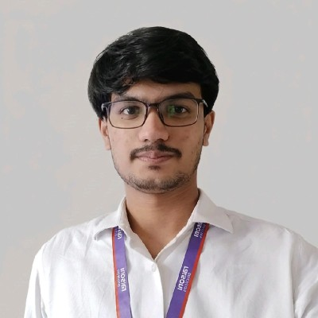

About Me:

Computer Science student with a strong interest in web development and problem-solving. Skilled in HTML, CSS, and JavaScript, and currently learning advanced web technologies. Passionate about building user-friendly applications and improving development skills through real-world projects.
Education
| Degree | Institution | Year |
|---|---|---|
| B.Tech | G. H. Raisoni College of Engineering, Nagpur | 2023-2027 |
| 12th | Vidyanchal The School, Akot | 2020-2022 |
| 10th | Vidyanchal The School, Akot | 2019-2020 |
Technical Skills
| Skills | Proficiency |
|---|---|
| HTML, CSS, JavaScript | Intermediate |
| C++, Python | Intermediate |
| MongoDB, SQL | Beginner |
| Git, GitHub | Beginner |
Key Projects
- FlavourFusion: Table and Food Booking System
Description: HTML, CSS, JavaScript
- Developed a web-based restaurant booking system with table reservation and food pre-ordering features.
- Designed a user-friendly interface for seamless booking experience.
- Enabled users to book tables in advance, reducing waiting time.
- Pneumonia Detection using Deep Learning
Description: Python, TensorFlow, CNN
- Built a deep learning model to detect pneumonia from chest X-ray images.
- Applied transfer learning using VGG16 model.
- Visualized predictions using Grad-CAM technique.
Hobbies
- Watching Cricket
- Listening to Music and Podcasts